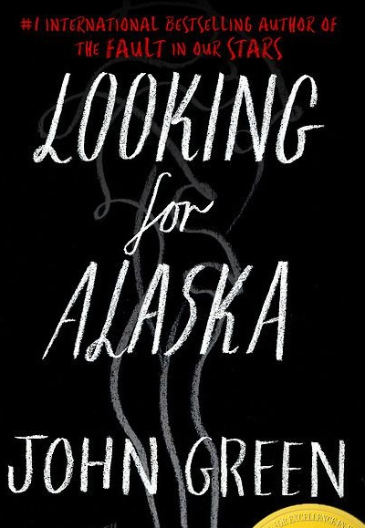
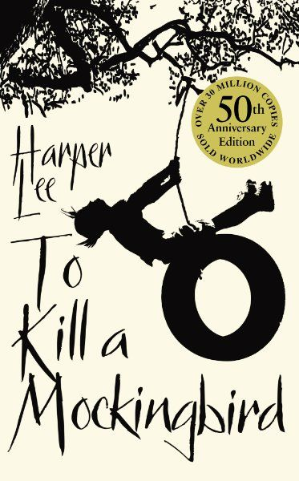

Favorite books
- 
-
- 
Looking for Alaska
Miles Halter is a teenager obsessed with famous last words and is tired of his safe and boring life at home. He enrolls in a new school in search of what the poet François Rabelais, on his deathbed, called the "Great Perhaps." Many things await him at Culver Creek, including Alaska Young. Intelligent, funny, troubled, and extremely alluring, Alaska will lead Miles into her labyrinth and catapult him toward the Great Perhaps.
The Little Prince
The Little Prince is a poetic tale written by Antoine de Saint-Exupéry. The story begins when a pilot crashes in the Sahara Desert and encounters a little prince from a distant asteroid. The Little Prince narrates his experiences on different planets and encounters with unique characters such as the King, the Conceited Man, and the Fox. Throughout the story, he shares reflections on life, love, friendship, and the importance of keeping the inner child alive. The book addresses profound themes through metaphors and poetic dialogues, touching the hearts of readers and highlighting the significance of cherishing life's essential things. "The Little Prince" is a timeless work that captivates readers of all ages, conveying a universal message of love, kindness, and human connection.
The Hobbit
The Hobbit tells the story of Bilbo Baggins, a quiet and contented Hobbit whose life is turned upside down when he joins the wizard Gandalf and thirteen dwarves on their journey to reclaim a stolen treasure. It is a perilous adventure, and in the end, Bilbo faces alone the guardian of the treasure, the most terrifying dragon in all of Middle-earth.
The perks od beign a wallflower
A world of sex, drugs, and rock 'n' roll, where everyone is searching for that perfect song that triggers the perfect impulse to feel infinite. The struggle between apathy and enthusiasm marks the end of Charlie's adolescence in this entertaining and thought-provoking story.
To Kill a Mockingbird
To Kill a Mockingbird is a novel by Harper Lee set in the 1930s in Maycomb, Alabama. The story is narrated by Scout Finch, a curious young girl, and addresses themes such as prejudice and racism. Scout's father, the lawyer Atticus Finch, is assigned to defend Tom Robinson, a wrongly accused black man of rape. Through the trial, the narrative explores the racial tensions of the town. Scout, Jem, and their friend Dill learn lessons about empathy and courage throughout the story. The book questions social injustices and celebrates the pursuit of justice, becoming a classic of literature.